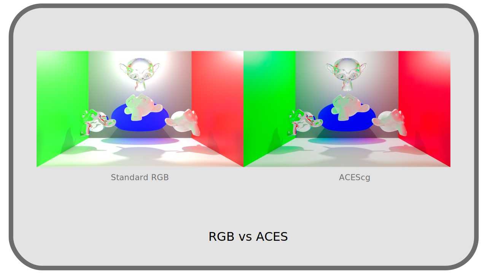

I.N - OpenColorIO and ACES¶
OpenColorIO1, often abbreviated as OCIO, is a free and open source library for developers (not users), facilitating color management. It aims to be used by all applications in digital image production, thus facilitating color management throughout the production pipeline: by becoming standard, it makes it possible to share the color configuration throughout the production pipeline and to have control over it at all stages, as easily as possible.
Applications using OCIO therefore all share the same color management configuration format, a file named congig.ocio.
It is thus possible to easily share the same color management throughout the production pipeline, defining workspaces, file spaces, color picker spaces, display spaces, final output spaces… See Chapter II.A - Practical Implementation*.
Note
OpenColorIO also brings support for a large number of LUTs* formats, solving the problem of LUTs compatibility with applications.
Several OCIO configurations are provided as examples that can already be used in production as is, including the ACES configuration (see below) or the Sony Pictures Imageworks configuration for animation (spi-anim) and special effects (spi-vfx).
N.1 - Compatible applications¶
Here is an alphabetical list (not exhaustive) of the main applications using OpenColorIO, established in early 20212.
| Application | Use | Notes |
|---|---|---|
| Adobe After Effects | Compositing | Partial support whith a plugin. |
| Autodesk Arnold | Render engine | |
| Maxon Redshift | Render engine | |
| Blender, Cycles, Eevee | 3D, Render engine, compositing | |
| DuME | Encoder | Partial support via LUTs |
| SideFX Houdini | 3D | |
| Krita | Drawing | |
| The Foundry Mari | Textures | |
| Autodesk Maya | 3D | |
| Mocha Pro | Tracking | |
| Modo | 3D | |
| The Foundry Nuke | Compositing | |
| Adobe Photoshop | Dessin | Partial support via ICC profiles |
| Substance Designer | Textures | |
| Unreal Engine | Render engine | |
| V-Ray | Render engine |
Hint
Any application that can use LUTs* can be integrated into a production line using OCIO, by exporting the LUTs needed for production from OpenColorIO, either via the command line tool provided, or by using the DuME media encoder which can create these LUTs.
N.2 - ACES¶
ACES stands for Academy Color Encoding System, and is intended to be a color management and exchange standard for digital imaging; it aims to simplify color management and maintain the highest fidelity in all production pipelines. It is free and open source, and uses OpenColorIO in its operation.
ACES actually consists of:
- 5 color spaces designed for different uses in the production chain.
- An OpenColorIO configuration, with the LUTs necessary for its use everywhere.
- A set of recommendations on color calculation and storage.
See chapter I - List of color spaces for the technical details concerning the various color spaces of ACES.
The main recommendations on storage are:
- Use the openEXR file format.
- Save in wide color spaces, encompassing all others. The ideal space encompassing all visible colors is ACES2065-1.
N.2.a - ACES color space¶
The different spaces offered by ACES correspond to different needs and specific uses. Here are the most important ones.
N.2.a.a - ACES2065-1¶
The space ACES2065-1 is the space with the broadest gamut*, including all the visible colors, and its curve of transfer is linear.
It is in fact the most complete of the spaces, its goal being to be able to store the colors without loss, and compatible with all the past and future spaces.
Like all linear spaces, it requires a depth of at least 16 bpc, with a preference for 32 bpc compatible with its goal of efficiently representing any visible color.
It is in fact little used, representing too much data, its interest being mainly theoretical.
N.2.a.b - ACEScg¶
The ACEScg (for computer generated (images)) space is derived from ACES2065-1, but uses different primaries*, reducing its gamut*, which is still very large, while being more convenient than ACES2065-1.
It is a linear space, designed and ideal for 3D rendering and compositing. With its very wide gamut, and the associated OCIO configuration allowing to efficiently generate images in smaller standard spaces, it allows a color synthesis more faithful to reality and human vision, especially in the highlights.

Comparison between rendering using RGB primaries and ACEScg3
The ACES recommendation is to use this space in animation and CGI production, both as a workspace in applications, and for storage in the openEXR file format. Thus, from rendering and image generation to final delivery, no data conversion is required (except for display of course).
N.2.a.c - ACEScc¶
The ACEScc (for color correction) space is similar to ACEScg except that its transfer curve is not linear.
This transfer curve makes it a poor space for rendering and image generation, but makes it much more practical for color grading.

It is therefore recommended for color correction and retouching work on filmed images, or at the end of animation production for final color correction.
Sources & References
-
Being free and open source, many studios contribute to the development of OpenColorIO, managed by the ASWF, Academy Software Foundation in the USA. ↩
-
A complete list is available on the OpenColorIO website. ↩
-
This comparison is made withBlender; ACES is not included in Blender, but it is easy to use with OpenColorIO. Although ACES does not come standard with Blender, the Blender renderings are still much better than this example: Blender uses a LUT named Filmic which greatly improves the conversion from linear RGB space to sRGB of the final image (disabled for this example), but still remaining less colorful than the result using the ACES configuration of OCIO. ↩